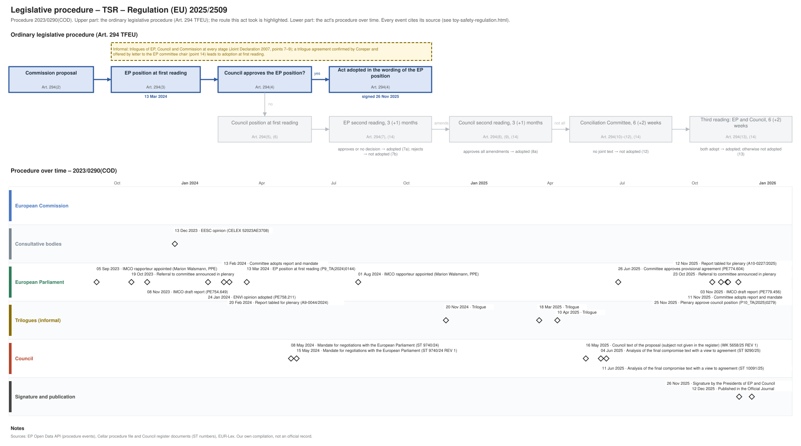

← All procedures · Regulation timeline
Procedure 2023/0290(COD), completed. Drawing: SVG · PNG · PDF (A3) · draw.io

| Date | Actor | Event | Document | Source |
|---|---|---|---|---|
| 2023-09-05 | European Parliament | IMCO rapporteur appointed (Marion Walsmann, PPE) | EP Open Data API, procedure 2023-0290 (participation RAPPORTEUR) | |
| 2023-10-19 | European Parliament | Referral to committee announced in plenary | EP Open Data API, procedure 2023-0290 (REFERRAL) | |
| 2023-11-08 | European Parliament | IMCO draft report | PE754.649 | EP Open Data API, procedure 2023-0290 (COMMITTEE_TABLING_REPORT) |
| 2023-12-13 | Consultative bodies | EESC opinion | CELEX 52023AE3708 | Cellar procedure file 2023/290 |
| 2024-01-24 | European Parliament | ENVI opinion adopted | PE758.211 | EP Open Data API, procedure 2023-0290 (COMMITTEE_ADOPTING_OPINION) |
| 2024-02-13 | European Parliament | Committee adopts report and mandate | EP Open Data API, procedure 2023-0290 (COMMITTEE_ADOPTING_REPORT) | |
| 2024-02-20 | European Parliament | Report tabled for plenary | A9-0044/2024 | EP Open Data API, procedure 2023-0290 (TABLING_PLENARY) |
| 2024-03-13 | European Parliament | EP position at first reading (Art. 294(3) TFEU) | P9_TA(2024)0144 | EP Open Data API, procedure 2023-0290 (PLENARY_AMEND_PROPOSAL) |
| 2024-05-08 | Council | Mandate for negotiations with the European Parliament | ST 9740/24 | Cellar procedure file 2023/290 (Council register) |
| 2024-05-15 | Council | Mandate for negotiations with the European Parliament | ST 9740/24 REV 1 | Cellar procedure file 2023/290 (Council register) |
| 2024-08-01 | European Parliament | IMCO rapporteur appointed (Marion Walsmann, PPE) | EP Open Data API, procedure 2023-0290 (participation RAPPORTEUR) | |
| 2024-11-20 | Trilogues (informal) | Trilogue | EP Open Data API, procedure 2023-0290 (INTERINSTITUTIONAL_NEGOTIATION) | |
| 2025-03-18 | Trilogues (informal) | Trilogue | EP Open Data API, procedure 2023-0290 (INTERINSTITUTIONAL_NEGOTIATION) | |
| 2025-04-10 | Trilogues (informal) | Trilogue | EP Open Data API, procedure 2023-0290 (INTERINSTITUTIONAL_NEGOTIATION) | |
| 2025-05-16 | Council | Council text of the proposal (subject not given in the register) | WK 5658/25 REV 1 | Cellar procedure file 2023/290 (Council register) |
| 2025-06-04 | Council | Analysis of the final compromise text with a view to agreement | ST 9290/25 | Cellar procedure file 2023/290 (Council register) |
| 2025-06-11 | Council | Analysis of the final compromise text with a view to agreement | ST 10091/25 | Cellar procedure file 2023/290 (Council register) |
| 2025-06-26 | European Parliament | Committee approves provisional agreement | PE774.604 | EP Open Data API, procedure 2023-0290 (COMMITTEE_APPROVE_PROVISIONAL_AGREEMENT) |
| 2025-10-23 | European Parliament | Referral to committee announced in plenary | EP Open Data API, procedure 2023-0290 (REFERRAL) | |
| 2025-11-03 | European Parliament | IMCO draft report | PE779.456 | EP Open Data API, procedure 2023-0290 (COMMITTEE_TABLING_REPORT) |
| 2025-11-11 | European Parliament | Committee adopts report and mandate | EP Open Data API, procedure 2023-0290 (COMMITTEE_ADOPTING_REPORT) | |
| 2025-11-12 | European Parliament | Report tabled for plenary | A10-0227/2025 | EP Open Data API, procedure 2023-0290 (TABLING_PLENARY) |
| 2025-11-25 | European Parliament | Plenary approve council position | P10_TA(2025)0279 | EP Open Data API, procedure 2023-0290 (PLENARY_APPROVE_COUNCIL_POSITION) |
| 2025-11-26 | Signature and publication | Signature by the Presidents of EP and Council | EP Open Data API, procedure 2023-0290 (SIGNATURE) | |
| 2025-12-12 | Signature and publication | Published in the Official Journal | EP Open Data API, procedure 2023-0290 (PUBLICATION_OFFICIAL_JOURNAL) |
| Date | Document | Kind | Subject |
|---|---|---|---|
| 2023-11-08 | PE754.649 | ep-draft-report | DRAFT REPORT on the proposal for a regulation of the European Parliament and of the Council on the safety of toys and repealing Directive 2009/48/EC |
| 2023-12-13 | CELEX 52023AE3708 | opinion | Opinion of the European Economic and Social Committee on the ‘Proposal for a regulation of the European Parliament and of the Council on the safety of toys and … |
| 2024-02-12 | PE758.211 | ep-opinion | OPINION on the proposal for a regulation of the European Parliament and of the Council Safety of toys and repealing Directive 2009/48/EC |
| 2024-02-20 | A9-0044/2024 | ep-report | REPORT on the proposal for a regulation of the European Parliament and of the Council on the safety of toys and repealing Directive 2009/48/EC |
| 2024-03-13 | P9_TA(2024)0144 | ep-position | Safety of toys and repealing Directive 2009/48/EC |
| 2024-05-08 | ST 9740/24 | council-position | Mandate for negotiations with the European Parliament |
| 2024-05-15 | ST 9740/24 REV 1 | council-position | Mandate for negotiations with the European Parliament |
| 2025-05-16 | WK 5658/25 REV 1 | council-text | Proposal for a Regulation on the safety of toys: 4-column document |
| 2025-06-04 | ST 9290/25 | agreed-text | Analysis of the final compromise text with a view to agreement |
| 2025-06-11 | PE774.604 | agreed-text | PROVISIONAL AGREEMENT RESULTING FROM INTERINSTITUTIONAL NEGOTIATIONS Proposal for a regulation of the European Parliament and of the Council on the safety of … |
| 2025-06-11 | ST 10091/25 | agreed-text | Analysis of the final compromise text with a view to agreement |
| 2025-11-03 | PE779.456 | ep-draft-report | DRAFT RECOMMENDATION FOR SECOND READING on the Council position at first reading with a view to the adoption of a regulation of the European Parliament and of … |
| 2025-11-12 | A10-0227/2025 | ep-report | RECOMMENDATION FOR SECOND READING on the Council position at first reading with a view to the adoption of a regulation of the European Parliament and of the … |
| 2025-11-25 | P10_TA(2025)0279 | ep-position | Safety of toys and repealing Directive 2009/48/EC |
{kind=link}
{kind=link}